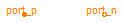
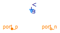
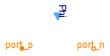

This package provides sources of magnetic potential difference and magnetic flux.
Extends from Modelica.Icons.SourcesPackage (Icon for packages containing sources).
| Name | Description |
|---|---|
| ConstantMagneticPotentialDifference | Source with constant magnetic potential difference |
| SignalMagneticPotentialDifference | Source of magnetic potential difference with signal input |
| ConstantFlux | Source of constant magnetic flux |
| SignalFlux | Source of constant magnetic flux |

Source of constant magneto motive force.
SignalMagneticPotentialDifference, ConstantFlux, SignalFlux
Extends from Modelica.Magnetic.FundamentalWave.Interfaces.PartialTwoPort (Two magnetic ports for graphical modeling).
| Type | Name | Default | Description |
|---|---|---|---|
| ComplexMagneticPotentialDifference | V_m | Complex(re=1, im=0) | Complex magnetic potential difference |
| Type | Name | Description |
|---|---|---|
| PositiveMagneticPort | port_p | Positive complex magnetic port |
| NegativeMagneticPort | port_n | Negative complex magnetic port |
model ConstantMagneticPotentialDifference
"Source with constant magnetic potential difference"
extends Modelica.Magnetic.FundamentalWave.Interfaces.PartialTwoPort;
parameter Modelica.SIunits.ComplexMagneticPotentialDifference V_m=
Complex(re=1, im=0) "Complex magnetic potential difference";
Modelica.SIunits.ComplexMagneticFlux Phi "Complex magnetic flux";
equation
// Flux into positive port
port_p.V_m - port_n.V_m = V_m;
// Magneto motive force
port_p.Phi = Phi;
// Local flux balance
port_p.Phi + port_n.Phi = Complex(0,0);
end ConstantMagneticPotentialDifference;

Source of magneto motive force with complex signal input.
ConstantMagneticPotentialDifference, ConstantFlux, SignalFlux
Extends from Modelica.Magnetic.FundamentalWave.Interfaces.PartialTwoPort (Two magnetic ports for graphical modeling).
| Type | Name | Description |
|---|---|---|
| PositiveMagneticPort | port_p | Positive complex magnetic port |
| NegativeMagneticPort | port_n | Negative complex magnetic port |
| input ComplexInput | V_m | Complex signal input of magnetic potential difference |
model SignalMagneticPotentialDifference "Source of magnetic potential difference with signal input" extends Modelica.Magnetic.FundamentalWave.Interfaces.PartialTwoPort;Modelica.ComplexBlocks.Interfaces.ComplexInput V_m "Complex signal input of magnetic potential difference"; Modelica.SIunits.ComplexMagneticFlux Phi "Complex magnetic flux"; equation // Flux into positive port port_p.V_m - port_n.V_m = V_m; // Magneto motive force port_p.Phi = Phi; // Local flux balance port_p.Phi + port_n.Phi = Complex(0,0);end SignalMagneticPotentialDifference;
Source of constant magnetic flux.
ConstantMagneticPotentialDifference, SignalMagneticPotentialDifference, SignalFlux
Extends from Modelica.Magnetic.FundamentalWave.Interfaces.PartialTwoPort (Two magnetic ports for graphical modeling).
| Type | Name | Default | Description |
|---|---|---|---|
| ComplexMagneticFlux | Phi | Complex(re=1, im=0) | Complex magnetic flux |
| Type | Name | Description |
|---|---|---|
| PositiveMagneticPort | port_p | Positive complex magnetic port |
| NegativeMagneticPort | port_n | Negative complex magnetic port |
model ConstantFlux "Source of constant magnetic flux"
extends Modelica.Magnetic.FundamentalWave.Interfaces.PartialTwoPort;
Modelica.SIunits.ComplexMagneticPotentialDifference V_m
"Complex magnetic potential difference";
parameter Modelica.SIunits.ComplexMagneticFlux Phi=
Complex(re=1, im=0) "Complex magnetic flux";
equation
// Flux into positive port
port_p.V_m - port_n.V_m = V_m;
// Magneto motive force
port_p.Phi = Phi;
// Local flux balance
port_p.Phi + port_n.Phi = Complex(0,0);
end ConstantFlux;

Source of magnetic flux with complex signal input.
ConstantMagneticPotentialDifference, SignalMagneticPotentialDifference, ConstantFlux,
Extends from Modelica.Magnetic.FundamentalWave.Interfaces.PartialTwoPort (Two magnetic ports for graphical modeling).
| Type | Name | Description |
|---|---|---|
| PositiveMagneticPort | port_p | Positive complex magnetic port |
| NegativeMagneticPort | port_n | Negative complex magnetic port |
| input ComplexInput | Phi | Complex signal input of magnetic flux |
model SignalFlux "Source of constant magnetic flux"
extends Modelica.Magnetic.FundamentalWave.Interfaces.PartialTwoPort;
Modelica.SIunits.ComplexMagneticPotentialDifference V_m
"Complex magnetic potential difference";
Modelica.ComplexBlocks.Interfaces.ComplexInput Phi
"Complex signal input of magnetic flux";
equation
// Flux into positive port
port_p.V_m - port_n.V_m = V_m;
// Magneto motive force
port_p.Phi = Phi;
// Local flux balance
port_p.Phi + port_n.Phi = Complex(0,0);
end SignalFlux;